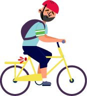
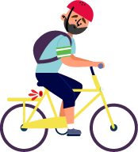
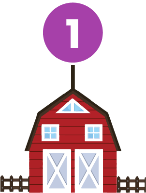
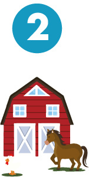
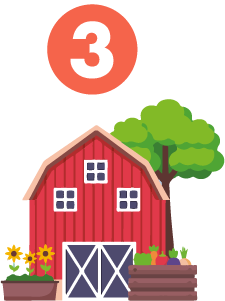
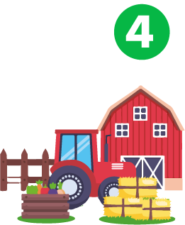

¡Geografías humanas!
Caracterizar el espacio físico y humano en que se desarrollará el proyecto vial.
-

Objetivo - Tiempo - Recursos
-

Paso a paso
-

Herramientas
-

 

-
Objetivo de la fase:
Caracterizar el espacio físico y humano en que se desarrollará el proyecto vial.
-
Tiempo estimado de ejecución:
30 días
-
Recursos requeridos:
-
Humanos: Se debe garantizar la disponibilidad presupuestal para la contratación del profesional que liderará esta metodología.
-
Tecnológicos: Computador; videobeam o televisor para realizar la proyección de los instrumentos en el marco de los diálogos de saberes; repositorio del proyecto que contenga los protocolos e instrumentos de mapeo espacial y social, los formatos de acta de concertación, entre otros.
-
Físicos: Espacio dotado de sillas, mesas y demás implementos requeridos para el desarrollo de los encuentros programados (máximo 4).
-
Materiales: Protocolos e instrumentos de mapeo espacial y social impresos, para el diligenciamiento de los participantes; hojas blancas, lápices, colores, tajalápiz, y borradores.
-
Financieros: Los requeridos para la compra de los recursos enunciados. Es importante antes de realizar cualquier tipo de compra, indagar con los integrantes de los Comités Comunitarios y Multisectoriales, así como con otros actores sociales, sobre la tenencia de los mismos y la disponibilidad de aportarlos al proyecto.
-
-

Co-construcción de herramientas de mapeo espacial y social
Encuentro de Comités Comunitarios y Multisectoriales para la discusión y afinamiento de las herramientas de mapeo sugeridas.
-

Organización para la implementación de las herramientas de mapeo
Encuentro de los Comités Comunitarios y Multisectoriales para la conformación de grupos de aplicación de las herramientas de mapeo.
-

Implementación de las herramientas de mapeo
Los Comités Comunitarios y Multisectoriales aplican las herramientas de mapeo, atendiendo a las orientaciones y acuerdos previstos..
-

Socialización y consolidadción de resultados
Encuentro de los Comités Comunitarios y Multisectoriales para consolidar el informe de resultados obtenidos en el marco de la implementación..